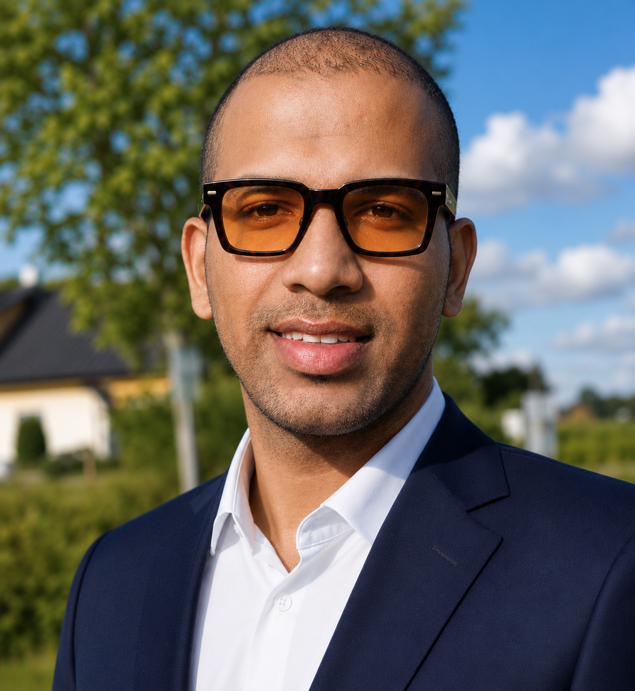

About us
Fewer complicated steps. More things getting done.
Klick och Klart helps small businesses in Sweden save time by automating everyday work in Fortnox.
Many business owners spend hours on repetitive administration, such as handling invoices, updating customer information, preparing reports, and moving data between different systems. We create practical automation solutions that make these tasks faster, simpler, and less prone to errors.
Our services are designed for the way your business actually works. Whether you run a consultancy, shop, service company, or growing small business, we build solutions that fit your routines and connect smoothly with Fortnox.
The goal is simple: less manual administration, better control, and more time to focus on your customers and your business.
Klick och Klart means exactly that: fewer complicated steps and more things getting done.

Founder
Yadhukrishnan
Software Engineer | Founder of Klick & Klart
Building automation solutions for businesses using Fortnox and modern web technologies.
LinkedIn profile